Segundo o portal R7, o Brasil já é um dos maiores mercados de produtos e tratamentos capilares do mundo, e a formação de especialistas na área clínica tem se tornado um diferencial competitivo real.
noticias.r7.com
O MERCADO DA TRICOLOGIA CLÍNICA
Está em plena expansão
Nos últimos anos, a procura por tratamentos capilares cresceu de forma acelerada — com pacientes cada vez mais conscientes sobre calvície, queda de cabelo, afinamento e saúde do couro cabeludo.
De acordo com pesquisas recentes, mais de 50% da população sofre ou sofrerá com algum grau de alteração capilar ao longo da vida. Isso explica por que clínicas e profissionais especializados nessa área estão em alta demanda.
Agora, imagine-se como a profissional que oferece não apenas protocolos estéticos, mas soluções baseadas em evidência científica, com domínio sobre disfunções, técnicas e terapias capilares eficazes.
Enquanto muitos oferecem apenas o básico, você estará à frente, com olhar clínico treinado para avaliação completa e atuação segura.
Essa é a proposta do nosso curso de Tricologia Clínica:
Oferecer uma formação intensiva, prática e atualizada, que une teoria sólida, raciocínio clínico e protocolos modernos, com o acompanhamento de profissionais que atuam ativamente no mercado e dominam a área capilar com profundidade.
Se você quer se diferenciar no mercado da estética e oferecer um atendimento completo, essa é sua oportunidade de crescer em uma das áreas que mais avançam dentro da estética clínica.”
![Ícone do Whatsapp]()